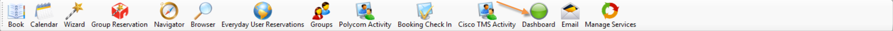

Once you have see configured facilities (rooms, categories, services, resources, and so on), you can configure special process templates for "managed space," which is meeting space that may require additional oversight and an approval process to finalize a reservation. For example, you may wish to configure a large banquet hall as managed space to ensure that any request to use it is approved by a supervisor. That supervisor would use the Dashboard from the EMS Desktop Client menu bar to view requests for space.

Typically, managed space involves services, expenses, and invoicing that affect multiple stakeholders and departments, and templates designed for this model are typically assigned to Everyday Users of EMS Web App. By contrast, such templates are not recommended for assignment to EMS for Outlook users since Microsoft® Outlook does not show the request status of such a reservation.
Process Overview:
To configure a process template to require supervisory approval: